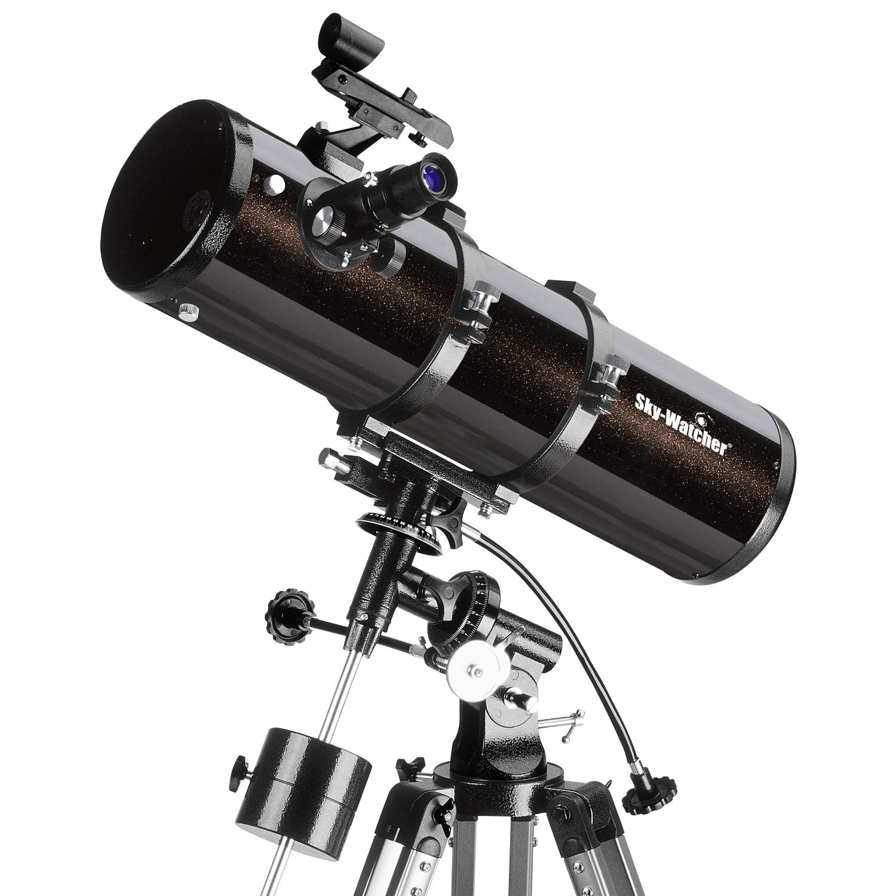

SkyWatcher Explorer 130P EQ2
130/650-es modell, paraboloid főtükör, kitűnő képalkotás, kompakt méret, sokoldalú felhasználhatóság jellemzi ezt az igen népszerű modellt.
A termék részletes leírása
Ez a SkyWatcher Explorer 130P EQ2 egy Newton-rendszerű (tükrös) távcső, mely a kis távcsövek, a kezdők számára ajánlott műszerek között az egyik legnagyobb teljesítményű. 130mm-es objektívje a Hold- és bolygómegfigyelésen kívül a halvány mély-ég objektumok megfigyelésére is alkalmassá teszi a műszert, különösen ha sötét, vidéki égbolt alól távcsövezünk. Ilyen körülmények közt akár 500 mélyég-objektum is megfigyelhető vele (a Vizi Péter: Csillagatlasz kistávcsövekhez c. könyvből az összes). Rövid felépítése miatt ideális utazótávcső.
Míg a legtöbb kistávcső főtükre gömb felületű, addig a 130/650-es már paraboloid főtükörrel szerelt, ami jobb optikai minőséget nyújt, így a nagy nagyítású megfigyelésekre is kiválóan alkalmassá teszi a műszert. F/5-ös fényereje (vagy nyílásviszonya) rövid felépítést eredményez, így a távcső könnyebben hordozható, könnyen kezelhető és stabilabban tartja a mechanikája. A 650 mm fókuszú paraboloid tükre kisebb nagyítású megfigyelésekre determinálja, de kitűnő optikai minősége miatt rövid fókuszú okulárokkal, vagy Barlow-lencse közbeiktatásával sokkal nagyobb nagyításokkal is végezhetünk megfigyeléseket. A csomag tartozéka egy 10 mm-es és egy 25 mm-es Barium okulár, melyekkel 26x-os és 65x-ös nagyítást érhetünk el. Ám további okulárokkal (vagy Barlow-lencsével) egészen 260x-ig bővíthetjük a nagyítást, mely az ajánlott nagyítástartomány felső határa. A 34,5 mm-es segédtükre mérsékelt (26%-os) központi kitakarást eredményez, és a tartólábak is igen vékonyak, melyek további előnyt jelentenek a nagy nagyítású megfigyeléseknél. EQ2-es mechanikája alap kiszerelésben kézi finommozgatású, de utólag óragéppel is bővíthető.
A távcső elsősorban vizuális megfigyelésre készült, fotózásra csak korlátozottan alkalmas. A képet az okuláron keresztül, vagy egy Barlow-lencsével a kétszeres (háromszoros, stb.) hosszúságúra nyújtott fókuszban közvetlenül is rögzíthetjük. Elsődleges (primer) fókuszban nem lehet a képet rögzíteni, a távcső mechanikai felépítése nem teszi ezt lehetővé (a fókuszsík a kisméretű segédtükör miatt közel van a távcső falához, így a tükörreflexes gépekkel azok vázmélysége (backfocus) miatt nem kapunk képet. Ha mély-ég objektumokat szeretnénk fényképezni ilyen műszerrel, akkor ahhoz a távcső 2"-es Crayford kihuzattal szerelt változatára az Explorer 130PDS modellre van szükség.